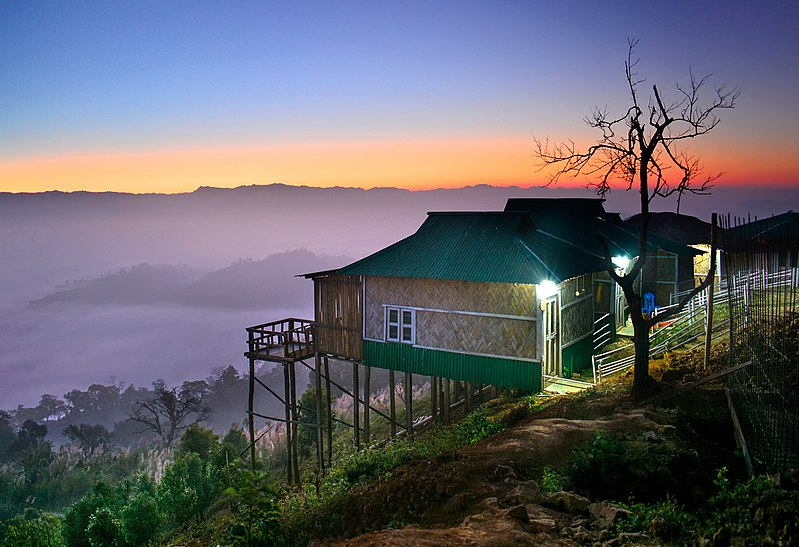
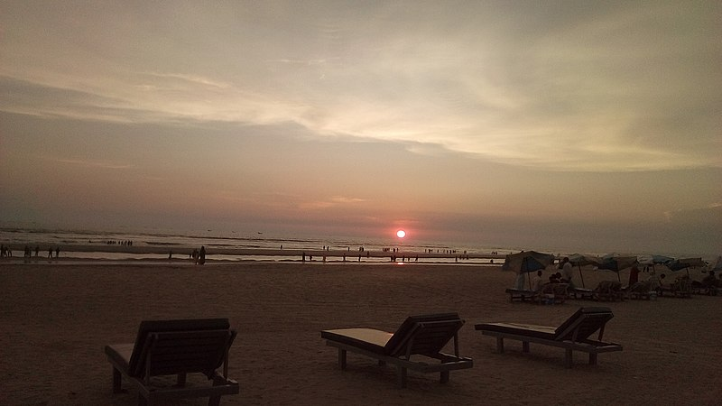
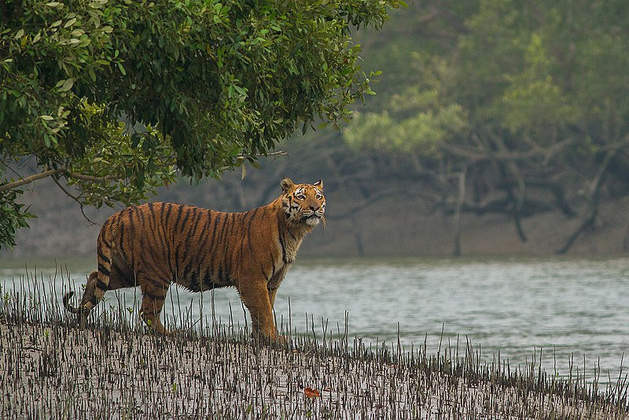

1st may, 2021
Sajek Valley
Sajek Valley is one of the popular tourist spots in Bangladesh situated among the hills of the Kasalong range of mountains in Sajek union, Baghaichhari Upazila in Rangamati District.[3] The valley is 2,000 feet (610 m) above sea level.[4] Sajek valley is known as the Queen of Hills & Roof of Rangamati.
The name of Sajek Valley came from the Sajek River that originates from Karnafuli river. The Sajek river works as a border between Bangladesh and India.Sajek is a union located in the north of Chittagong Hill Tracts. It's under Baghaichori Upazila in Rangamati hill district, it is situated 67 kilometres (42 mi) north-east from Khagrachhari town and 95 kilometres (59 mi) north from Rangamati city. The border of Bangladesh and Mizoram of India is 8 kilometres (5.0 mi) east from Sajek.
Sajek valley is known for its natural environment and is surrounded by mountains, dense forest, and grassland hill tracks. Many small rivers flow through the mountains among which the Kachalong and the Machalong are notable. On the way to Sajek valley, one has to cross the Mayni range and the Mayni river. The road to Sajek has high peaks and falls.The native people of Sajek valley are ethnic minorities. Women seem to be more involved in economic activities here. Tea stalls, food joints and roadside marketplaces are dominated by women. Picking fruits and vegetables early in the morning is a common trade here. They are not fluent in Bengali but the young population speak some English.

13 june, 2021
Cox's Bazar Sea Beach
Cox's Bazar Beach, located at Cox's Bazar, Bangladesh, is the longest natural sea beach in the world running 150 kilometres (93 mi).and 3rd longest beach after Praia do Cassino of Brazil and Ninety Mile Beach of Australia. It is the top tourist destination of Bangladesh.
Cox's Bazar is famous for its long natural sandy sea beach. ... Cox's Bazar has the world's largest unbroken sea beach which stretches more than 120 km. The entire beach is a stretch of golden sandy sea beach which is reachable by motorbike.
There are many tourist attractions around Cox’s Bazar, which are easily accessible by Jeeps and in some cases cars.You can go himchari, inani Beach, aggmeda Khyang, ramu,teknaf and may other islands. There are also lots of tourist activities like swimming and surfing, sun bathing, island hopping etc.

19 july, 2021
Sundarbans
Sundarbans is a mangrove area in the delta formed by the confluence of the Ganges, Brahmaputra and Meghna Rivers in the Bay of Bengal. It spans from the Hooghly River in India's state of West Bengal to the Baleswar River in Bangladesh's division of Khulna. It comprises closed and open mangrove forests, land used for agricultural purpose, mudflats and barren land, and is intersected by multiple tidal streams and channels. Four protected areas in the Sundarbans are enlisted as UNESCO World Heritage Sites, viz. Sundarbans National Park, Sundarbans West, Sundarbans South and Sundarbans East Wildlife Sanctuaries.
The Sundarbans are an important habitat for the Bengal tiger (Panthera tigris).[39] The forest also provides habitat for small wild cats such as the jungle cat (Felis chaus), fishing cat (Prionailurus viverrinus), and leopard cat (P. bengalensis).
Several predators dwell in the labyrinth of channels, branches, and roots that poke up into the air. This is the only mangrove ecoregion that harbors the Indo-Pacific region's largest terrestrial predator, the Bengal tiger.